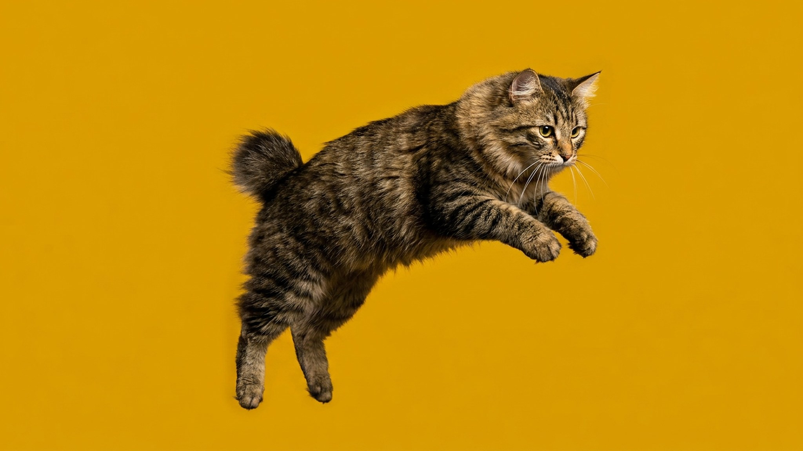

Хозяин надевает шлейку — кошка сама подходит и ждёт. По дороге приносит игрушку в зубах и кладёт у ног. Это не собака: это американский бобтейл. Порода с коротким «заячьим» хвостом и характером, который ставит многих любителей кошек в тупик. Ниже — честный разбор: внешность, поведение, уход и для кого такая кошка подойдёт.
Главная черта породы — укороченный хвост. Он составляет около трети длины обычного кошачьего хвоста, но у каждой особи свой: прямой, изогнутый, пушистый или с «помпоном». Это результат естественной доминантной мутации — хвосты бобтейлам не купируют.
Американский бобтейл — одна из немногих кошачьих пород, которую заводчики и владельцы открыто называют «кошкой-собакой». Это не метафора.
За эти качества породу ценят как кошку-терапевта: бобтейлов берут в дома с пожилыми людьми и детьми с особенностями развития.
🐾 У вас американский бобтейл?
AnimaLife соберёт уход под породу: к каким болезням есть склонность, что проверять по возрасту, чем кормить и когда пора к врачу. Бесплатно, прямо в мессенджере.
Собрать план ухода → Собрать в MAX →
У вас iPhone? AnimaLife есть в App Store
Уход зависит от типа шерсти. Короткошёрстные бобтейлы требуют минимума, полудлинношёрстные — чуть больше внимания в период линьки.
Американский бобтейл — крепкая порода без накопленных породных болезней, характерных для многих «заводских» линий. Тем не менее несколько моментов стоит держать в голове.
🐾 Ваш питомец — американский бобтейл?
Заведите профиль в AnimaLife: приложение запомнит породу, возраст и вес и будет подсказывать по уходу именно для неё. Вопросы AI-ветеринару — круглосуточно и бесплатно.
Завести профиль → Завести в MAX →
У вас iPhone? AnimaLife есть в App Store
🐾 Понравился разбор?
Подпишитесь на канал — каждый день разбираем по одному тревожному симптому у кошек и собак: что в пределах нормы, а когда пора к врачу. Подпишитесь, чтобы не пропустить разбор, который может спасти здоровье вашего питомца.
Порода — для тех, кто хочет активного компаньона и готов уделять ему время. Бобтейл отлично вписывается в семью с детьми, уживается с собаками и другими кошками, спокойно переносит переезды. Подойдёт людям, которые много путешествуют с питомцем или хотят кошку на прогулки.
Не подойдёт тем, кто ищет независимую кошку «на диване»: бобтейл требует общения и вовлечённости. Оставленный в одиночестве надолго, он скучает.
Материал носит информационный характер и не заменяет очную консультацию ветеринара.